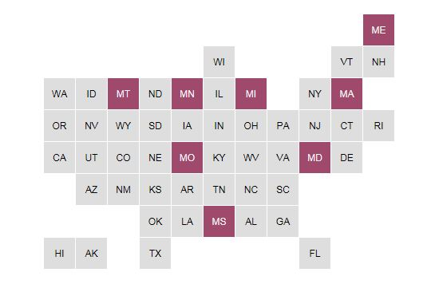

d3 sandwich
d3 sandwich
Abstract Maps
not sure what to put in the index page. At a minimum, a link to each of the recipes.
Now it's your turn! Before you try one of the variations, right click this link to download the abstract state map. Try playing around with it:
- Change the array of selected states( Here's how)
- Change the color of the normal and selected states ( Here's how)
Recipe Variation #1
Variation #1: Scores
Recipe Variation #2
Variation #2: Reading scores from a CSV file
